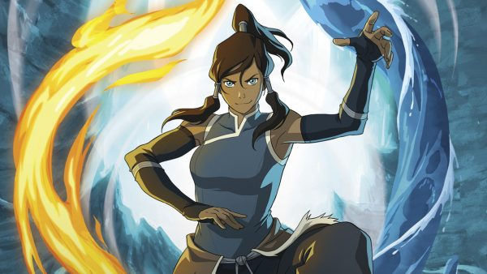
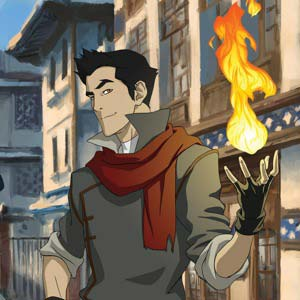
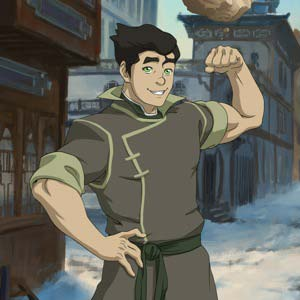
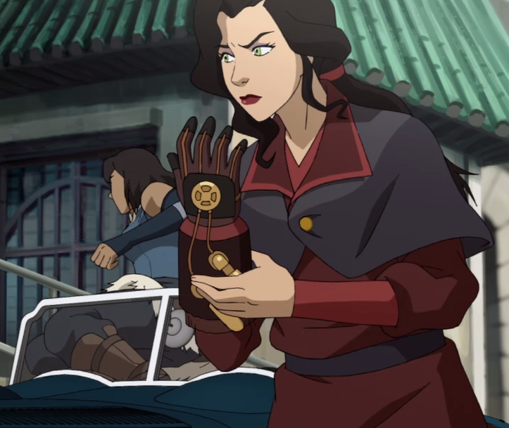
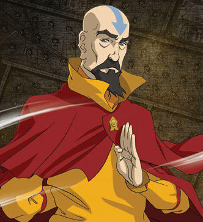
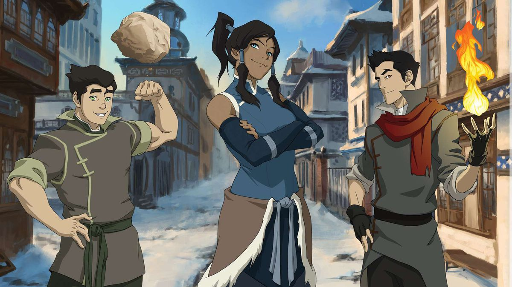
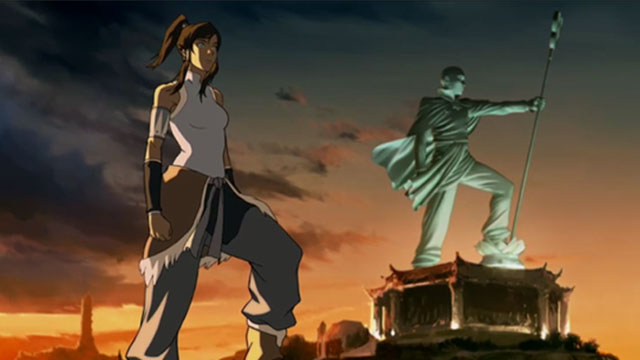

The Legend of Korra
- Genre Action, aventure, fantasy
- Création Michael Dante DiMartino, Bryan Konietzko
- Production Nickelodeon Animation Studios
- Pays d'origine Etats-Unis
- Chaîne de diffusion Nickelodeon
Acteurs principaux (voix françaises)
-
Lutèce Ragueneau donne sa voix à Korra
-
Olivier Martret donne sa voix à Mako
-
Alexandre Nguyen donne sa voix à Bolin
-
Jessica Monceau donne sa voix à Asami
-
Guy Chapellier donne sa voix à Tenzin
Résumé
La série fait suite à la série Le Dernier Maître de l'Air, son action se situe un siècle plus tard.
Korra est un maître de l'eau venant du Pôle Sud, elle est également la fille du chef de la tribu du Pole du Sud, qui a un fort caractère. En tant qu'Avatar, elle doit apprendre à maîtriser les quatre éléments. Les maîtrises de l'eau, de la terre et du feu et l'air lui ont été enseignées pendant toute son enfance au pôle sud par les maîtres du Lotus Blanc, cependant elle n'arrive pas à contrôler à la perfection sa maitrise de l'air. Au début de la série, elle part vivre à la Cité de la République pour apprendre la maîtrise de l'air auprès de Tenzin, le dernier maître de l'air. La Cité de la République a été créée par Aang et Zuko après cent ans de guerre et abrite des gens de toutes les nations.
Dans la série, plusieurs nouveaux personnages ont un lien avec les anciens. Par exemple, Korra apprendra à maîtriser l'air avec Tenzin, l'un des trois enfants de Katara et Aang. Lin Beifong est non seulement le chef de la police de la Cité de la République mais aussi la fille de Toph, qui a appris à ses filles et aux policiers la maîtrise du métal.
Le monde a également connu une grande modernisation, la Cité de la République ressemble au New York et au Shanghai de 1920 (avenues, gratte-ciels, véhicules à moteur, tramways, paquebots à vapeur, dirigeables). Cette évolution technologique qui a permis aux gens de s'affranchir de la maîtrise des éléments dans la vie de tous les jours (eau courante, électricité, chauffage, transports, radios, appareils photos, micro et haut-parleur) a aussi donné naissance à des mouvements anti-maîtrise de plus en plus nombreux dans la ville.
Au fur et à mesure, la série prend une tournure de plus en plus politique et philosophique, ainsi que plus de maturité.
Les saisons (ou livres)
| Saison | Nombre d'épisodes | Date de diffusion | Chaîne de diffusion |
|---|---|---|---|
| 1 | 12 | 14 avril 2012 | Nickelodeon |
| 2 | 14 | 13 septembre 2013 | Nickelodeon |
| 3 | 13 | 27 juin 2014 | Nickelodeon |
| 4 | 13 | 3 octobre 2014 | Nickelodeon |